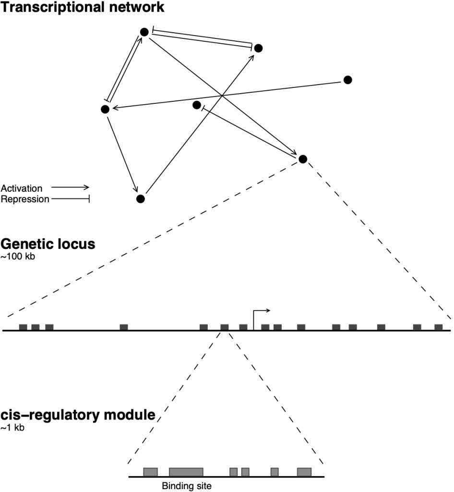

Research
What makes a cell choose its fate?
Our work connects the regulation of individual genes to the behavior of interconnected networks, using blood-cell development as a model system.

Research Directions
01
Decoding the gene regulatory logic of individual enhancers
The regulatory logic—the transcription factors (TFs), their roles, and their binding sites—of most genes remains to be discovered. The decoding of regulatory logic is challenging because of its complexity—genes may be regulated by multiple enhancers and each enhancer may, in turn, be jointly regulated by several TFs exerting positive or negative influence over the target gene.
We developed a data-driven computational approach to solve the problem of decoding regulatory logic in a scalable manner by training mechanistic models of transcription on functional genomics datasets. Our approach does not require a priori knowledge of the identities or the regulatory roles, activation or repression, of the TFs regulating a CRM. The TFs regulating a CRM and their regulatory roles are inferred in silico by testing many alternative models, each realizing a potential regulatory scheme, against quantitative reporter data.
We applied our approach to a gene essential for neutrophil development, Cebpa, whose regulatory logic was poorly understood at the time. We identified 4 enhancers, of which 3 were not known previously. Our in silico approach inferred a comprehensive map of the regulation of the Cebpa locus, with activation by PU.1, C/EBP family TFs, Gfi1, and Egr1, which was verified experimentally.

Future Direction: Having demonstrated the utility of our approach by learning the regulation of an important developmental gene, we are exploring ways of scaling regulatory decoding to a genomic scale by utilizing high-throughput reporter assays.
02
The architecture of hematopoietic gene regulatory networks
One of the main ideas about how multipotential progenitors choose between the red-blood cell and myeloid lineages is that two so-called master regulators, Gata1 and PU.1, function as a bistable switch by repressing each other’s expression. Although simple, this model is based largely on genetic and biochemical analyses conducted at steady state, which may not capture causality.
We took an alternative, machine-learning based, approach of inferring genetic architecture by training mechanistic dynamical models on gene expression time series data. We constructed a model of a 12-gene GRN including key lineage-specifying TFs, cytokine signaling effectors, and cytokine receptors using a high-temporal resolution dataset of erythrocyte-neutrophil differentiation. The model can quantitatively predict the consequences of several genetic perturbations and the inferred architecture is consistent with prior evidence.
Our analysis of the transient dynamics of gene regulation produced a surprise. In contrast to the bistable-switch model, which posits that PU.1 initiates the differentiation of neutrophils, our model predicts that PU.1 is activated much later in the differentiation process by C/EBPα and Gfi1, TFs known to be necessary for myeloid differentiation. This prediction was also validated in an independent single-cell RNA-Seq dataset. Besides providing insights into the causality of events and the network architecture underlying lineage choice, this work establishes the our modeling approach as a powerful tool for understanding cell-fate choice.
Future Direction: The extensive amount of lineage antagonism and transdifferentiation documented in the hematopoietic system implies that the specification of a lineage not only depends on the factors expressed in it but also on factors expressed in other lineages. Accurate modeling of lineage decisions therefore must integrate multiple lineages. We are expanding the scope of our work to the choices between multiple hematopoietic lineages and to datasets generated by newer single-cell techniques.
03
Technology development: Fast Inference of Gene Regulation

Hematopoietic cell-fate specification relies on large densely interconnected gene networks. A major bottleneck in predictively modeling large networks using differential equations is that parameter inference is computationally expensive. For example, inferring the parameters of a 12-gene network takes about 30 hours on 10 CPUs. Larger networks are nearly impossible to infer since the computational demands grow very rapidly with the number of genes. We have developed a new method for parameter inference, Fast Inference of Gene Regulation (FIGR), that utilizes supervised classification techniques and is vastly more efficient than previous methods. For example, FIGR achieves a 600x speedup on the gap gene network of Drosophila.
Future Direction: FIGR enables differential equation modeling of much larger networks than was previously possible and we are utilizing it our efforts to infer hematopoietic gene networks from multiple lineages.
04
Non-additive control of gene expression by multiple enhancers
Classical enhancers have long been regarded as acting additively in a distance independent manner, but recent experiments do not support the classical assumptions and reveal non-additive behavior. Non-additive responses could be a result of interference between enhancers at the level of promoter-enhancer looping or chromatin structure. We are combining genome editing, epigenetic profiling, and computational modeling to investigate the mechanisms underlying non-additive co-regulation of genes by multiple enhancers.
05
Control of cell-cycle exit by cell identity transcription factors during differentiation
During hematopoiesis, most pluripotent stem cells are quiescent, and the bulk of amplification comes from early and late lineage restricted progenitors. Recent functional genomic studies have revealed that cell-fate and cell-cycle gene regulatory networks (GRNs) are large and densely interconnected, but do not explain how rapidly dividing cells exit the cell cycle and differentiate. We acquired a large time-series RNA-seq and ATAC-seq datasets and find widespread coordinate regulation of cell-cycle genes by the transcription factor PU.1 that binds to their as yet uncharacterized distal regulatory elements. We also find that different canonical mediators of cell-cycle exit are regulated in a cell identity specific manner. Our current efforts are directed at identifying enhancers of candidate cell-cycle exit regulators and decoding their regulation.